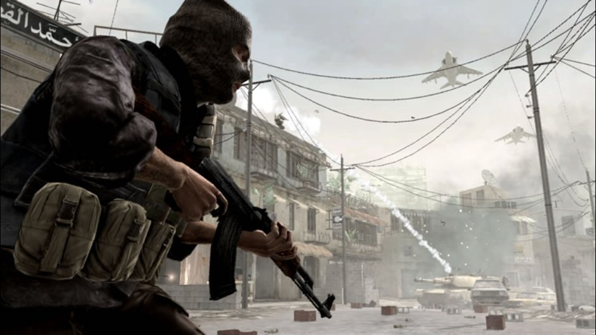
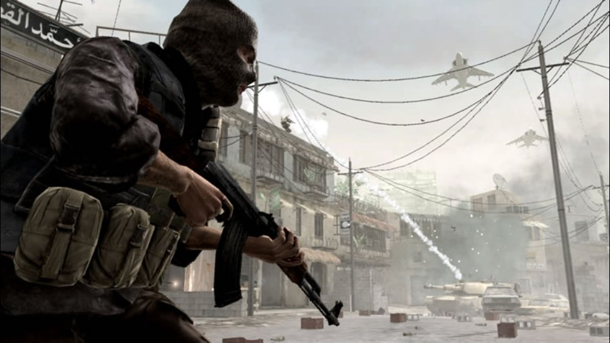

Old CoD Games' Matchmaking Might Have Been Fixed
 

It appears that matchmaking for older Call of Duty games, including Call of Duty 4: Modern Warfare, Modern Warfare 2, and Modern Warfare 3, has been fixed on Xbox 360. Previously, Xbox 360 players were unable to load into matches, despite the active communities across each game.
Datum objave: 12.7.2023.
Izvor